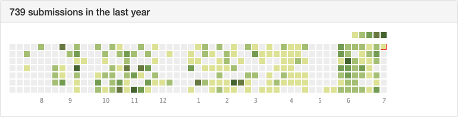

本来以为今年会是轻松的一年，拿到了 summer internship，选的课也比较轻松，没想到却遇上了 covid-19。年初的时候立下了蛮多 flag，已经到了年中，还是做个总结吧。
✅ 代表做的还不错，❎ 代表下半年要努力了。
- ❎ 读十本书：基本就读了课本… 下半年多看看书，少看 b 站，争取把阅读笔记的坑补上。
- ✅ 300天LC打卡：还不错，除了 5 月考试周基本上每天有坚持，不过最近有点懈怠，要坚持✊。

- ❎ 瘦到60kg：现在70+kg，原地踏步…
- ❎ 学会一门乐器：没开始，进度 0 🙂
- ✅ 学会摄影：虽然疫情影响前半年没怎么出门，但是最近还是有出门！还有机会去给朋友拍婚礼照哈哈哈。
- ✅ 博客和公众号月更：公众号应该永久停更了，不过博客除了五月考试都有更新，还不错。下半年争取多一些 tech 相关的文章。
- ✅ 决定自己读PhD还是直接工作：应该是决定直接工作了。唉其实还是想继续做研究，奈何 Trump 真的恶心，先工作一两年看看情况吧。
- ❓ 改掉flag只立不拔的习惯：算是完成了一半一半，还不错，至少有在慢慢恢复积极的心态啦。
- ✅ 学会爱自己：有的！
完成了一半的计划，除了坚持继续的，再给下半年加几条计划吧：
- 💪 努力拿到 Amazon 的 return offer，去 HudsonYard 上班！虽然感觉 Manager 的反馈有点难（突然开始悲观，你又开始了？），不过还是要好好努力，也是有机会的，即便不行，至少也是一种锻炼。
- 搭建自己的 Hexo 主题。做前端虽然简单，不过有很多的正反馈，也算是对我的一种激励吧。
- 认认真真地参加一次 Kaggle 的比赛。每次都是三分钟热度，报名后跑几个代码就咕咕咕了，希望这次一定要好好参加一次。
- 如果疫情好转，多出去走走，少看 b 站，多看看世界。
- 找一个女朋友（or 男朋友，不知道哈哈），谈一次恋爱，不论结果。人毕竟是群居动物，还是想体验被爱的感觉。也该走出来了。
虽然 2020 这个世界真的很 shit，但是也要好好生活，好好爱自己❤️。
Jul 6, 2020
于 Brooklyn, New York